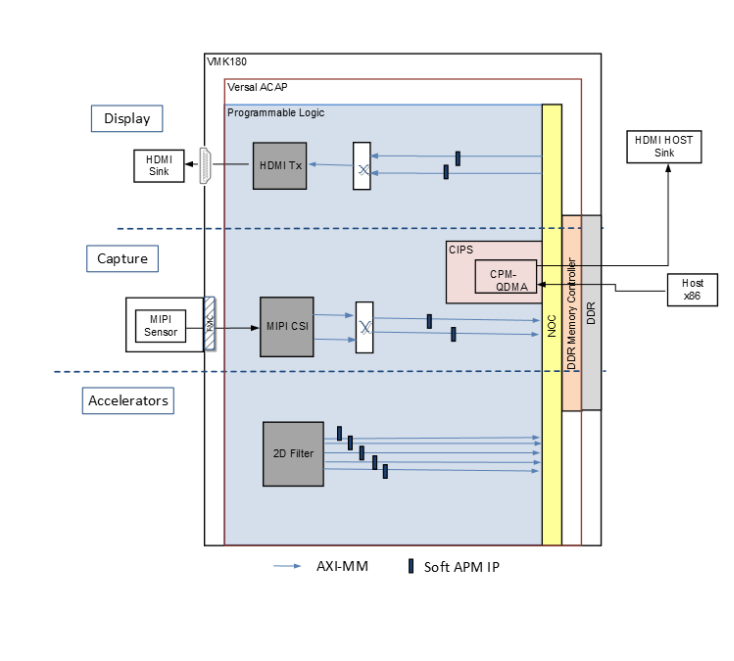

Hardware Architecture of the Platform¶
Introduction¶
This section describes the design implemented on Processing System (PS) and Programmable Logic (PL) on the VMK180 board , LIIMX274MIPI-FMC image sensor daughter card and x86 host machine (root complex).
The following figure shows the top level hardware architecture of the reference design.
{kind=link}
At a high level, the design comprises of three pipelines
Capture/Input pipeline: This comprises of pipelines through which video data are captured.
MIPI CSI-2 capture pipeline (PL)
Video Input (file read) from x86 host via PCIe
Display/Output pipeline: This comprises of pipelines through which video data are outputted.
Video Output via PCIe to host (Host)
HDMI Tx Display (PL)
Video Accelerator/processing pipeline: This comprises of mem to mem pipelines through which video data is processed/decrypted.
The 2D Filter accelerator (PL) integrated into the platform using Vitis.
MIPI Capture¶
MIPI capture pipeline receives video frames from an external Image sensor and writes it into memory. The single sensor MIPI CSI-2 receiver capture pipeline is shown in the following figure.

This pipeline consists of six components, four of which are controlled by the APU via an AXI4-Lite-based register interface, one is controlled by the APU via an I2C register interface, and one is configured statically.
The Sony IMX274 sensor is a 1/2.5 inch CMOS digital image sensor with an active imaging pixel array of 3864H x 2196V. The image sensor is controlled by an I2C interface using an AXI I2C controller in the PL. It is mounted on an FMC daughter card and has a MIPI output interface that is connected to the MIPI CSI-2 RX subsystem inside the PL. For more information, see the LIIMX274 MIPI FMC data sheet.
The MIPI CSI-2 receiver subsystem (CSI RX) includes a MIPI D-PHY core that connects four data lanes and one clock lane to the sensor on the FMC card. It implements a CSI-2 receive interface according to the MIPI CSI-2 standard v2.0 with underlying MIPI D-PHY standard v1.2. The subsystem captures images from the IMX274 sensor in RAW10 format and outputs AXI4-Stream video data. For more information, see the MIPI CSI-2 Receiver Subsystem Product Guide (PG232).
The AXI subset converter is a statically-configured IP core that converts the raw 10-bit (RAW10) AXI4-Stream input data to raw 8-bit (RAW8) AXI4-Stream output data by truncating the two least significant bits (LSB) of each data word.
The Image Single Processing IP available in the Vitis vision librarires (https://github.com/Xilinx/Vitis_Libraries/tree/master/vision/L1) implements the following functions. * The Badpixelcorrection module removes the defective pixels in the image as an image sensor may have a certain number of defective/bad pixels that may be the result of manufacturing faults or variations in pixel voltage levels based on temperature or exposure.
The Gain control module improves the overall brightness of the input image by applying a multiplicative gain (weight) for red and blue channel to the input bayerized image.
The Demosaicing module converts a single plane Bayer pattern output, from the digital camera sensors to a color image.
The histogram module computes the histogram of given input image. The normalization module changes the range of pixel intensity values. Both modules are used to improve the contrast in the image. See https://xilinx.github.io/Vitis_Libraries/vision/api-reference.html#vitis-vision-libraryfunctions for more details
The ISP IP receives the RAW AXI4-Stream input data and interpolates the missing color components for every pixel to generate a 24-bit, 8 bits per pixel (8 bpc) RGB output image transported via AXI4-Stream. At 4 ppc, the AXIS width is 96-bit. A GPIO from the PS is used to reset the IP between resolution changes.
The video processing subsystem (VPSS) is a collection of video processing IP sub-cores. This instance uses the color space converter (CSC) configuration to perform color correction tasks including contrast, brightness, and gain control of red/green/blue colors . The CSC takes AXI3-Stream input data and produces AXI4-Stream output data, both in 24-bit RGB format. A GPIO is used to reset the subsystem between resolution changes. For more information, see the Video Processing Subsystem Product Guide (PG231).
The video frame buffer takes YUV 4:2:0 sub-sampled AXI4-Stream input data and converts it to the memory mapped AXI4 format, which is written to memory as 12-bit packed YUYV. The memory mapped AXI interface is connected to the system DDR via the NoC. For each video frame transfer, an interrupt is generated. A GPIO is used to reset the IP between resolution changes.
All of the IPs in this pipeline are configured to transport 4 ppc, enabling up to 2160p60 performance.
HDMI Display¶
The HDMI TX display pipeline (in the PL) is controlled by the video frame buffer read, which fetches the video layer from memory and sends the data to the HDMI TX subsystem. The HDMI TX subsystem processes data and sends it out to an external display device. The HDMI transmitter display pipeline is shown in the following figure.

As shown in the figure, the pipeline comprises three main components, each of them controlled by the APU via an AXI4-Lite base register interface. These components are described in the following paragraphs.
The video frame buffer read IP provides high-bandwidth direct memory access between memory and AXI4-Stream video type target peripherals, which support the AXI4-Stream video protocol. IP takes memory mapped AXI4 input data from DDR and converts it to AXI4-Stream format. The output is connected to HDMI transmitter subsystem. For each video frame transfer, an interrupt is generated. A GPIO is used to reset the core between resolution changes. For more information, see the Video Frame Buffer Read and Video Frame Buffer Write LogiCORE IP Product Guide (PG278).
The HDMI transmitter subsystem (HDMI TX) interfaces with PHY layers and provides HDMI encoding functionality. The subsystem is a hierarchical IP that bundles a collection of HDMI TXrelated IP sub-cores and outputs them as a single IP. The subsystem generates an HDMI stream from the incoming AXI4-Stream video data and sends the generated TMDS data to the video PHY layer. For more information, see the HDMI 1.4/2.0 Transmitter Subsystem Product Guide (PG235).
The HDMI GT controller (PHY) enables plug-and-play connectivity with video transmit or receive subsystems. The interface between the media access control (MAC) and physical (PHY) layers are standardized to enable ease of use in accessing shared gigabit-transceiver (GT) resources. The data recovery unit (DRU) supports lower line rates for the HDMI protocol. An AXI4-Lite register interface is provided to enable dynamic accesses of transceiver controls/status. For more information, see the HDMI GT Controller LogiCORE IP Product Guide (PG334).
CPM-PCIe Capture & Display¶
The integrated block for PCIe Rev. 4.0 with DMA and CCIX Rev. 1.0 (CPM) including DMA (QDMA) and two PCIe Controllers 0 & 1, is hardened in Versal ACAP devices. PCIE Controller 0 configured in Gen4 x8 mode transfers data from both host (X86) to end-point (VMK180) and vice-versa. On host-to-endpoint channel, Video frames recieved from host are written to DDR by QDMA via Network-on-Chip (NOC). On endpoint-to-host channel, processed Video frames from DDR are transfered to host and displayed on a monitor.
The QDMA Buffer Descriptors to move data in both the Host to end-point (H2C) direction, or the end-point to Host (C2H) direction are configured by Host via PCIe Interface. The driver for the block provide APIs to set these values in a user application.
For more information on CPM-PCIe & QDMA please refer to Versal ACAP CPM DMA and Bridge Mode for PCI Express v2.1 Product Guide (PG347).
PCIe User Space Register¶
For hand shaking between host and endpoint applications, the user space register IP provides a set of registers. The following figure shows the logical diagram of the IP.
There are 15 32-bit registers starting from offset that have read/write access from the PS. Each register is byte addressable, which means the address for the second register can be calculated by adding four to the address of the first one. Following these are 15 registers that are read-only for the PS and contain values written by the DMA/bridge IP. Reg14 is used as an Interrupt register and reg30 is an Interrupt Acknowledgment register as described in the previous section.
Similarly, there are 15 32-bit registers starting from offset 0x0000 that have read/write access from the host. Following these are 14 registers that are read-only for the host and contain data written by the PS.

Registers available to the PS are listed in the following table. Of these, reg0-reg14 have read and write access and reg15-30 are read-only.
Registers Available to the PS


The same register space is visible to the PCIe DMA with reg0-14 with read/write access and reg15-28 as read-only. Reg29-30 are dummy and are not required.
Clocks & Reset¶
PS Clocks
The following table lists the clock frequencies of key PS components.
Component |
Clock Frequency |
|---|---|
APU |
1,350 MHz |
NOC |
1000 MHz |
NPI |
300 MHz |
LPDDR |
1,600 MHz |
System Clocks
The following table identifies the main clocks of the PL design, their source, their clock frequency, and their function.
Clock |
Clock Source |
Clock Frequency |
Function |
|---|---|---|---|
pl0_ref_clk |
CIPS |
333 MHz |
Clock source for clocking wizard. |
clk_out1 |
Clocking wizard |
150 MHz |
Memory mapped AXI clock, accelerator clock. |
clk_out2 |
Clocking wizard |
105 MHz |
AXI-Lite clock to configure the different IPs in the design. |
clk_out3 |
Clocking wizard |
200 MHz |
MIPI D-PHY core clock, AXI4-Stream clock. |
sys_clk0 |
SI570 (External) |
200 MHz |
Differential clock source used internally by the memory controller to generate various clocks to access DDR memory. |
The PL0 clock is provided by the PPLL inside the PMC domain and is used as the reference input clock for the clocking wizard instance inside the PL. This clock does not drive any loads directly. A clocking wizard instance is used to deskew the clock and to provide threephase-aligned output clocks, Clk_out1, Clk_out2, and Clk_out3.
The Clk_out2 clock is generated by the clocking wizard instance. It is used to drive most of the AXI4-Lite control interfaces in the PL. AXI4-Lite interfaces are typically used in the control path to configure IP registers and, consequently, can operate at a lower frequency than datapath interfaces.
The Clk_out1 clock is generated by the clocking wizard instance. It is used to drive the memory mapped AXI interfaces of the capture pipelines in the PL. These interfaces are in the datapath and, consequently, are needed to support the maximum performance of 2160p60, which roughly corresponds to a 150 MHz clock at 4 ppc. The HLS-based IP core interfaces and Vitis generated modules are based on Clk_out1 (HLS IPs typically share a common input clock between control and data interfaces).
For details on HDMI Tx and HDMI GT clocking structure and requirements refer to HDMI 1.4/2.0 Transmitter Subsystem Product Guide (PG235) and HDMI GT Controller LogiCORE IP Product Guide (PG334). For HDMI Tx, an external clock chip is used to generate the GT reference clock depending on the display resolution. Various other HDMI related clocks are derived from the GT reference clock and generated internally by the HDMI GT controller.
For details on the various clock chips used refer to the VMK180 Evaluation Board User Guide (UG1366).
The master reset (pl_resetn0) is generated by the PS during boot and is used as input to the THREE processing system (PS) reset modules in the PL. Each module generates synchronous, active-Low and active-High interconnect and peripheral resets that drive all IP cores synchronous to the respective, clk_out0, clk_out1, and clk_out2 clock domains.
Apart from these system resets, there are asynchronous resets driven by PS GPIO pins. The respective device drivers control these resets which can be toggled at run-time to reset HLS- based cores.
Next Steps
License
Licensed under the Apache License, Version 2.0 (the “License”); you may not use this file except in compliance with the License.
You may obtain a copy of the License at [http://www.apache.org/licenses/LICENSE-2.0](http://www.apache.org/licenses/LICENSE-2.0)
Unless required by applicable law or agreed to in writing, software distributed under the License is distributed on an “AS IS” BASIS, WITHOUT WARRANTIES OR CONDITIONS OF ANY KIND, either express or implied. See the License for the specific language governing permissions and limitations under the License.